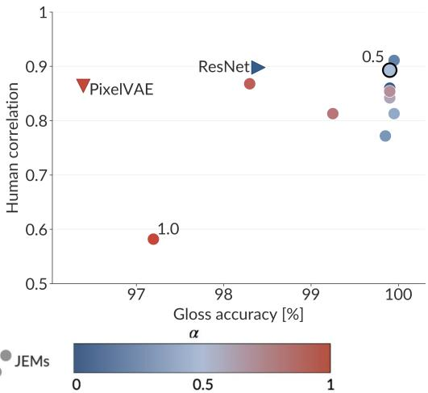

arXiv 新增 · P2 · 2026-05-26
Not Too Generative, Not Too Discriminative：对比学习、MIM、生成式预训练的取舍，本质上也在生成/判别轴上移动，这篇提供了目标函数层面的证据
提出人类视觉对齐并非纯生成式或纯判别式最好，而是在二者之间存在 sweet spot。
编号2605.23819
优先级P2
类别arXiv 新增
会议arXiv 新增
方法用 Joint Energy-Based Models 在固定架构中连续插值生成式与判别式训练目标，隔离 objective 本身对视觉表征的影响。
来源arXiv / OpenReview
先说结论。对比学习、MIM、生成式预训练的取舍，本质上也在生成/判别轴上移动，这篇提供了目标函数层面的证据。 提出人类视觉对齐并非纯生成式或纯判别式最好，而是在二者之间存在 sweet spot。


核心问题
对比学习、MIM、生成式预训练的取舍，本质上也在生成/判别轴上移动，这篇提供了目标函数层面的证据。
方法拆解
用 Joint Energy-Based Models 在固定架构中连续插值生成式与判别式训练目标，隔离 objective 本身对视觉表征的影响。
主要贡献
提出人类视觉对齐并非纯生成式或纯判别式最好，而是在二者之间存在 sweet spot。
实验看点
覆盖 perceptual similarity、gloss perception、uncertainty、robustness、shape-texture conflict、feature attribution 等六类 human-alignment benchmark。
局限与读法
JEM objective 和人类对齐 benchmark 不能直接等同于通用下游能力；大规模 SSL 模型上的验证仍缺。